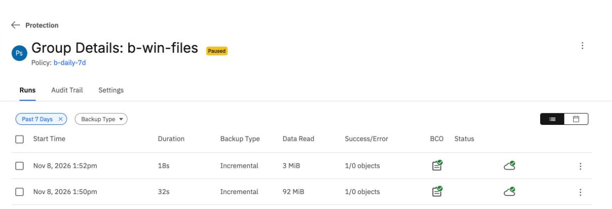
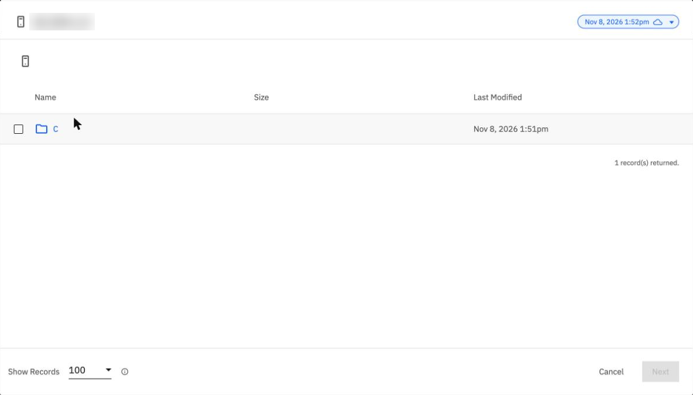
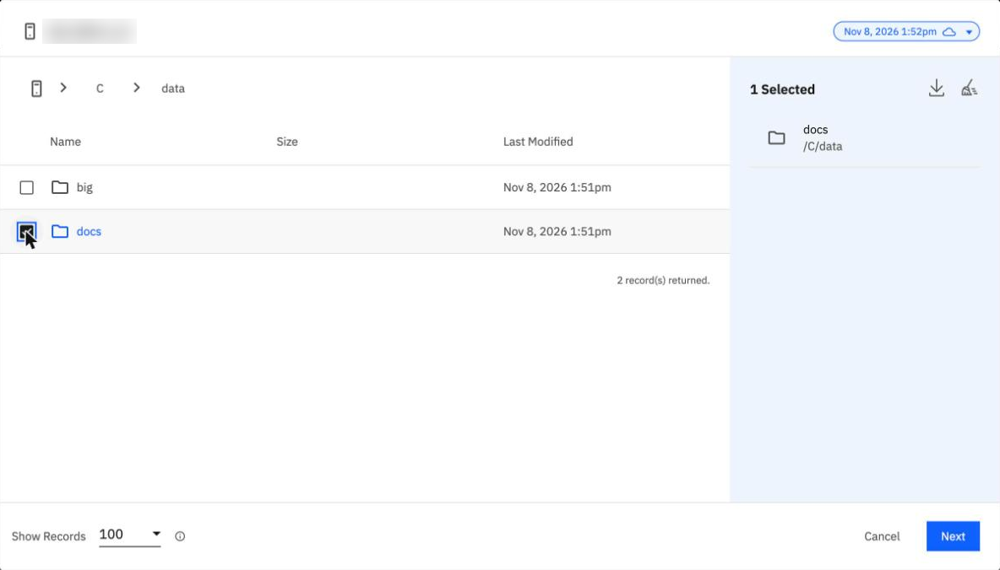

Windows paths
By the end you can find the path a Windows restore needs, explain why C:\data\docs fails, and read a Windows run in the console.
Northgate Freight is a made-up company. It protects the folder C:\data on a Windows server. Today it deletes C:\data\docs on purpose and restores it.
Every number and screen in this unit comes from real runs in our lab: 7 October 2026 for the command line and 8 November 2026 for the console, recorded in tutorials B4b and B5b. The server name is blurred in the screenshots.
Where the drive goes
The group was made with C:\data. A restore looks the path up in the snapshot's file view. In that view the drive is a folder named C.
You open the snapshot's file browser for the Windows server. What is at the top level?
Show the answer
One folder, C. Open C, then data, and tick docs: the selection reads /C/data.
The group accepted C:\data when it was made. Why does a restore not accept C:\data\docs?
Show the answer
That is the tutorial's explanation. The error text shows the path it looked for in the view, ending .../fs/C:\data\docs.
The restore that fails twice
Northgate deletes C:\data\docs and restores it from the command line, to its original place. The only thing that changes between tries is the path. These are the first two tries.
Try Time Path Result 1 11:50:09 C:\data\docs Failed in 5 s 2 11:50:37 C:\data\docs Failed, the same message Error while calling FileStat for C:\data\docs: [kNotFound]: Bridge error: Directory not present: /COHESITY_CAD_VIEWBOX_.../fs/C:\data\docs
What path does the third try use?
Show the answer
The third try, at 11:50:50, used /C/data/docs and succeeded in 13 s. Use /C/data/docs, not C:\data\docs.
Try Time Path Result 1 11:50:09 C:\data\docs Failed in 5 s 2 11:50:37 C:\data\docs Failed, the same message 3 11:50:50 /C/data/docs Succeeded in 13 s
Try 2 failed with the same message. What had changed?
Show the answer
In the tutorial, a sed error left the body unchanged, so C:\data\docs went in again.
Watch for this. In the console this does not happen. You pick the folder, you do not type its path.
Back up, restore, verify
Northgate's Windows group backs up C:\data, which holds 506 files. Then Northgate adds six files, five small and one of 3 MB, and runs the group again. Later it deletes C:\data\docs and restores it.
How much does the second backup run read?
Show the answer
3.2 MB against 96.4 MB.Run Files Read Time First 506 96.4 MB 31 s Second 512 3.2 MB 18 s
These are the console runs of 8 November 2026. The run on 7 October read 3.2 MB too.
After the restore, the script verify.ps1 checks the folder. What does it print?
Show the answer
ok=503 bad=0 missing=0, on 7 October with the command line and on 8 November with the console. The console restore took 9 s.
The same restore, without typing a path
These screens come from the BRS console in our lab on 8 November 2026. Click where you would click. After two misses the right place is marked.

Both runs are labelled Incremental. Click the figure that shows which one was the full backup.
Show where
Right. 92 MiB, in 32 s. The second run read 3 MiB in 18 s. Both rows say Incremental, so read Data Read.

You open Recover, then Files or Folders, and click the Windows server. Where is its drive?
Show where
Right. The browser shows the drive as a folder named C. Open C, then data, and tick docs.

You ticked docs. Where does the console show the path it will restore?
Show where
Right. The panel reads 1 Selected, docs, /C/data. You picked the folder; you did not type its path. Keep Original Server and Recover to Original Path and click Recover. In our lab on 8 November it succeeded at the first try, in 9 s.
Three questions
A command-line restore of a Windows folder fails with "Directory not present" for C:\data\docs. Which path do you give?
Show the answer
The restore looks the path up in the snapshot's file view, where the drive is a folder named C. In our lab /C/data/docs succeeded.
In the console, how do you avoid the path problem?
Show the answer
The browser shows the drive as a folder named C. You open it and tick docs; the selection reads /C/data.
Review from unit 4.1. What is the proof, in tutorial B5a, that a restore worked?
Show the answer
Delete a folder, restore it, and check every file against the checksum list. The tutorial calls this the proof that the backup works.
You can restore Windows files
A command-line restore of a Windows folder needs /C/data/docs, not C:\data\docs: in the snapshot the drive is a folder named C. In the console you pick the folder, so the problem does not arise.
Tutorial B4b backs up the Windows folder in full and then incrementally. Tutorial B5b restores it from the console and the command line and checks every file.